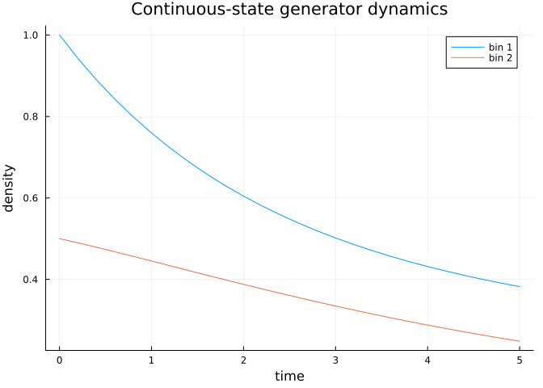
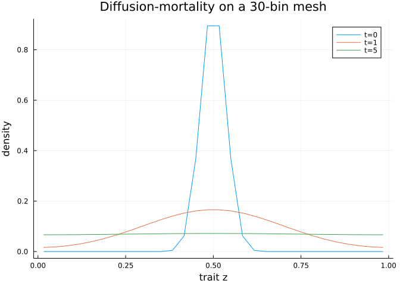

Introduction to continuous-state continuous-time IPMs
Overview
ContinuousStatePopulationDynamics.jl holds the deterministic continuous-time, continuous-state IPM machinery — the generator, delay, and PSPM transport layers. Densities $n(z, t)$ live on a continuous trait domain and evolve according to
\[\frac{\partial n}{\partial t} = G(z, z')\, n(z, t) + s(z, t),\]
discretised onto a mesh and lowered to SciML ODEProblems (or DDEProblems) for integration with OrdinaryDiffEq.
This vignette introduces the core problem type ContinuousIPMProblem and the supporting domain/structure/semantic types. Later vignettes cover delays (vignette 02) and PSPM transport (vignette 03).
Setup
using ContinuousStatePopulationDynamics
using StructuredPopulationCore
using OrdinaryDiffEq
using PlotsSemantic markers:
ContinuousState() isa AbstractStateSemantics, FiniteState() isa AbstractStateSemantics(true, true)ContinuousTime() isa AbstractTimeSemantics, DiscreteTime() isa AbstractTimeSemantics(true, true)Structure traits classify the IPM topology:
SimpleIPM() isa AbstractIPMStructure,
GeneralIPM() isa AbstractIPMStructure,
SimpleContinuousState() isa AbstractContinuousStateStructure,
GeneralContinuousState() isa AbstractContinuousStateStructure,
SimpleIPM() isa AbstractProjectionStructure(true, true, true, true, true)A discretised continuous-state generator
ContinuousDomain(lo, hi, n) builds an evenly spaced mesh:
domain = ContinuousDomain(0.0, 1.0, 4)
domain isa AbstractStateDomain, n_states(domain), bounds(domain), step_size(domain)(true, 4, [0.0, 0.25, 0.5, 0.75, 1.0], 0.25)meshpoints(domain)4-element Vector{Float64}:
0.125
0.375
0.625
0.875The generator matrix here is the discretised version of a continuous operator. We use a small 2-point demo to keep the matrix legible. A banded down-shift moves mass toward higher $z$ at constant rate:
domain2 = ContinuousDomain(0.0, 1.0, 2)
G = [-0.5 0.2;
0.1 -0.3]
u0 = [1.0, 0.5]
prob = ContinuousIPMProblem(G, domain2, u0, (0.0, 5.0); source = [0.1, 0.0])
prob isa AbstractContinuousIPMProblem,
prob isa AbstractContinuousStateDynamicsProblem(true, true)Lowering and solving
odeprob = to_ode_problem(prob)
sol = solve(odeprob, Tsit5(); saveat = 0.2)
plot(sol.t, hcat(sol.u...)'; labels = ["bin 1" "bin 2"],
xlabel = "time", ylabel = "density",
title = "Continuous-state generator dynamics")
solve dispatches directly on the IPM problem too:
sol_direct = solve(prob, Tsit5(); saveat = 5.0)
sol_direct.u[end]2-element Vector{Float64}:
0.3822955556028332
0.2481782164097129remake and dispatch restrictions
prob_long = ContinuousStatePopulationDynamics.remake(prob; tspan = (0.0, 10.0))
prob_long.tspan(0.0, 10.0)CSPD is continuous-time. Discrete-time iteration and direct eigenanalysis throw ArgumentError:
try
solve(prob, DirectIteration())
catch err
err
endArgumentError("DirectIteration is not defined for ContinuousIPMProblem; use a SciML ODE algorithm instead.")try
solve(prob, EigenAnalysis())
catch err
err
endArgumentError("EigenAnalysis is not defined for ContinuousIPMProblem; use to_ode_problem or a SciML ODE solve instead.")A more biologically motivated generator
A diffusion-like growth process on a finer mesh: probability mass diffuses to neighbouring bins under a tridiagonal generator.
n = 30
domain_fine = ContinuousDomain(0.0, 1.0, n)
zs = meshpoints(domain_fine)
dx = step_size(domain_fine)
D = 0.02 # diffusion coefficient
mu = 0.05 # uniform mortality
# Build a tridiagonal generator: discrete diffusion + mortality
G_diff = zeros(n, n)
for i in 1:n
G_diff[i, i] -= mu
if i > 1
G_diff[i, i-1] += D / dx^2
G_diff[i-1, i-1] -= D / dx^2
end
if i < n
G_diff[i, i+1] += D / dx^2
G_diff[i+1, i+1] -= D / dx^2
end
end
n0 = exp.(-((zs .- 0.5) ./ 0.05).^2) # narrow Gaussian centred at 0.5
prob_diff = ContinuousIPMProblem(G_diff, domain_fine, n0, (0.0, 5.0))
sol_diff = solve(to_ode_problem(prob_diff), Tsit5(); saveat = [0.0, 1.0, 5.0])
plot(zs, sol_diff.u; labels = ["t=0" "t=1" "t=5"],
xlabel = "trait z", ylabel = "density",
title = "Diffusion-mortality on a 30-bin mesh")
Summary
ContinuousDomainprovides mesh, bounds, and step size.ContinuousIPMProblemwraps a generator + domain + initial density- tspan; lower with
to_ode_problemor callsolvedirectly.
- tspan; lower with
- Abstract types (
AbstractContinuousIPMProblem,AbstractContinuousStateDynamicsProblem,AbstractContinuousStateStructure,AbstractIPMStructure,AbstractStateDomain,AbstractStateSemantics,AbstractTimeSemantics,AbstractProjectionStructure) classify every concrete type.
CSPD also re-exports DiscreteDomain from StructuredPopulationCore for parity with FiniteStatePopulationDynamics.jl; use it when a problem mixes a continuous trait axis with a small discrete stage classifier (e.g. juvenile/adult x size):
DiscreteDomain([:juvenile, :adult]) isa AbstractStateDomaintrue